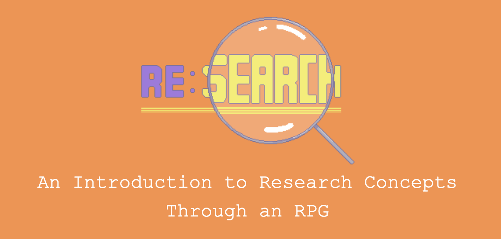
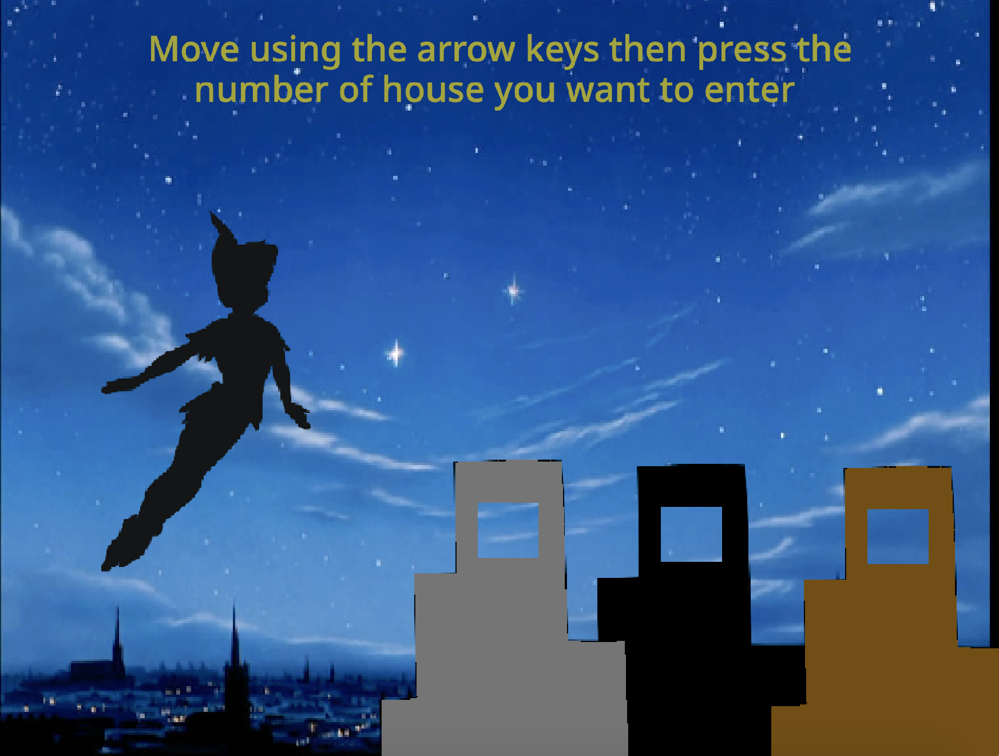

Bayan Mashat
Software Engineer • Researcher • Game Designer & Developer
Interested in games, data, AI, emotions, and care about stories, education, & mental health.
Software Engineer • Researcher • Game Designer & Developer
Interested in games, data, AI, emotions, and care about stories, education, & mental health.
I'm currently..
Things I'm working on right now..
[Research] A research paper about "Re:Search, A campus story" with Dr. Angelique Louie
[Game] The Day I Opened The Fridge. A small game about the difficulty of relationships & communication
[Novel] The Light of Sibly A story about emotions, mental health, self-exploration, what it means to fall in love, and what it means to fall in depression
Interests..
Game design & development • AI • Machine Learning • NLP • Human-Computer Interaction • Education • Mental Health • Emotions • Disabilities Studies • Creative Writing
In my free time (wait what free time?) I enjoy playing video games, reading anything interesting, writing short stories and poems, running and hiking, playing piano and Oud, passionately drinking a very fine cup of coffee, practicing Wing Chun Kung Fu, and recently ballroom & swing dancing!
EXPERIENCE:
Data Science Intern – Proxi
(Aug 2018 - Present)
Assisting senior data scientist in NLP and AI research for Proxi, Will Wright’s next AI simulation game based on memories. Work involved creating emotions classifiers, building Proxi language models, and designing Proxi-to-player interactions through conversation.
Game Developer Intern - Ranam
(Jun 2017 - Feb 2018)
Worked on Unity to develop a mobile game application to teach how to play songs with Oud and cultural instruments in a fun, engaging, and accessible way.
Game Designer & Project Manager - UC Davis
(Mar 2017 - Mar 2019)
Designed & managed a team of 7 students to develop an RPG to teach students research concepts, used as a supplementary assignment for the course "Introduction to Research", taught across UC campuses.
Project Manager - UC Davis
(Jun 2017 - Dec 2017)
Managed a team of 9 programmers and artists to develop a video game for the Food Science and Sensory Department to test the effects of video games on young children's desire to eat and accept vegetables.
RESEARCH:
Research assistant: McCoy’s Games AI Lab – UC Davis
(Jan 2019 - present)
Researching core knowledge representation in RPGs with Prof. Joshua McCoy.
Research assistant: D.I.C.E Lab – UC Davis
(Jun 2017 - Feb 2018)
Worked with Prof. Narine Yegiyan at the Dynamic Interactions in Cognition and Emotion Lab on studying the use of mobile technology to understand emotion regulation in STEM related academic performance.
Research intern: Beta Lab – UC Davis
(Oct 2015 - Mar 2017)
Researched how young people learn and develop through making & designing learning environments and tools to support the process. Worked involved reading papers, mentoring students, and collecting data.
PROJECTS:
Edumotion [Web App]
(2017-2018)
Web app for tracking emotions, developed in HackDavis’17 and resulted in a published study about using mobile technology to understand emotion regulation in academic performance.
Shadow Pan [Game]
(2016)
An expressive video game where the player solves mini mental health problems (specifically depression) through interactive conversations with animation characters.
Manara Research [Non-Profit Organization]
(2013-2016)
Co-founded a non-profit for educating pre-college students in Arab countries about scientific research and mentoring them to bring their research projects to national & international science fairs.
GOOPLAY [Game & Research Project]
(2010-2011)
An educational video game designed for researching the effectiveness of using games for improving web-searching skills for children from age 8 to 14. The project won the 1st place in Intel ISEF 2011 in social & behavioral sciences category.
This page is for everything game-related in my life! The games I'm playing, I played, the games I worked on, I'm working on, my opinion about games, discussion of games, analysis of games, & interviews with people of games!
Currently playing:
Ni No Kuni: Wrath of the White Witch
Uncharted 4: A Thief's End
Games I worked on:
Re:Search, A Campus Story (2018)

An educational role-playing video game used as assignments for the online course "Introduction to Research", taught by Prof. Angelique Louie throughout UC campuses in spring 2018. I served the role of the game designer and the project manager, where I designed the concept for the game to match the learning goals of the class & maintain the game design document (GDD) while managing a team of 7 students (programmers, artists, writers, and composer) and guiding game development to align with the course objectives.
Ranam (2018)

Ranam is a mobile game application that teaches users to play songs with Oud and cultural instruments in a fun, engaging, and accessible way. Ranam offers an engaging game-like experience, where users follow the game’s steps with their instrument, and our application listens to their playing and provides them with instant feedback on their performance. I was a game developer intern from summer 2017 to launch on Mar 2018.
Shadow Pan (2016)

Shadow Pan is an expressive video game where the player solves mini mental health problems (specifically depression) through interactive conversations with animation characters. Each level the player will get to meet a different character, listen to their problems, interact with them, and give (write) them solutions or suggestions on how to fix it or how move on. Results can be shared with other players to learn about different approaches on how to deal with depression. I wrote, designed, and developed the game as a side personal project.
Sharing in progress..
I’m always down for coffee, always. If you want to grab coffee and chat about games, programming, data, writing, art, or even coffee, feel free to reach out! We can meet in real life or online :)
My email: b.m.mashat [at] gmail [dot] com
Although not everyone here is actually a "friend", but I would like to devote this page for sharing the work I admire & respect.
Abdulmalik Zubaila -- Singer & writer
Album:
Status of the Sinking Men
Band: SKELETØN CROWD
Ahmad Khalifa -- Game Designer/Developer & Researcher in Games AI (PCG)
And more.. The list is constantly updated 🙌🏼